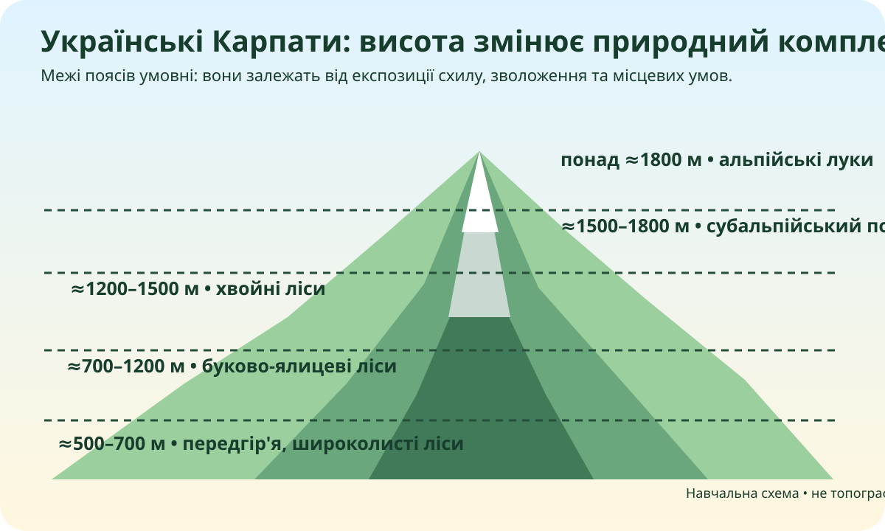

Карта, а не пам’ять
OpenStreetMap. Знайдіть дугу Українських Карпат, Чорногору, долини Пруту й Тиси та прикордонне положення гірського регіону.
Картографічні докази
Як висота змінює температуру?
Для шкільної моделі використаємо середній вертикальний градієнт 0,6 °C на 100 м. Це наближення, а не прогноз погоди.
Різниця з рівнем 500 м: 1000 м
Орієнтовне зниження температури: 6.0 °C
Чому вершини часто округлі?
Багато хребтів Українських Карпат складені флішем — чергуванням пісковиків, алевролітів і глин. Тривале вивітрювання, змив і денудація згладжують форми рельєфу. Але Карпати не «однакові»: є різкі скельні форми, вулканічні масиви, полонини й глибокі долини.
Не зводьте пояснення лише до «гори старі». Вік без процесу нічого не пояснює.
Висота працює як «географічний перемикач»

Локальна навчальна схема. Межі поясів приблизні й змінюються залежно від експозиції схилу, зволоження та конкретного масиву.
| Висота | Ймовірний комплекс | Чому? |
|---|---|---|
| ≈500–700 м | ||
| ≈1200–1500 м | ||
| понад ≈1800 м |
Зведіть докази в одну систему
| Компонент | Українські Карпати | Доказ / джерело |
|---|---|---|
| Положення | ||
| Рельєф | ||
| Клімат | ||
| Рослинність | ||
| Води | ||
| Використання |
Кейс 1 • вирубування на крутому схилі
Який ланцюг наслідків найімовірніший?
Кейс 2 • масовий туризм
Яке рішення найкраще?
Кейс 3 • охорона
Карпатський НПП охоплює висоти приблизно від 500 до 2061 м. Чому це важливо?
CER для практичної
Джерела для перевірки
ЕСУ: Українські Карпати займають близько 37 тис. км², простягаються приблизно на 280 км; усі вершини понад 2000 м зосереджені в Чорногорі.
Карпатський НПП: парк лежить на північно-східних схилах Українських Карпат у висотному діапазоні 500–2061 м.
10-бальна рубрика практичної
Разом: 0/10